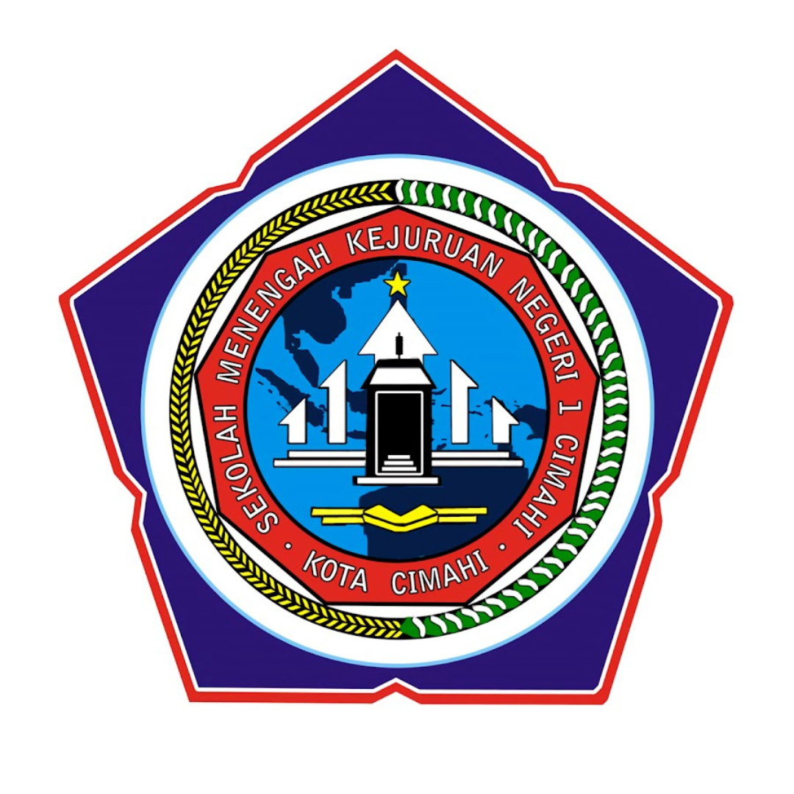

- Nama: Rina Permata Dewi
- Tempat, Tanggal Lahir: Ciamis, 26 Oktober 2005
- Jenis Kelamin: Perempuan
- No Telpon: +62 812 1274 5622
- Email: rina.permata.tif24@gmail.com
- Alamat Tinggal: Jl. Cibaligo, No. 217, Kota Cimahi
- Hobi: Menulis, Memasak, Menyanyi
Riwayat Pendidikan
2011-2017
SD Negeri Cibeureum Mandiri 1
2017-2020
SMP Negeri 7 Cimahi

2020-2024
SMK Negeri 1 Cimahi
Sistem Informasi Jaringan & Aplikasi
2024-2027
Politeknik Negeri Bandung
Teknik Informatika